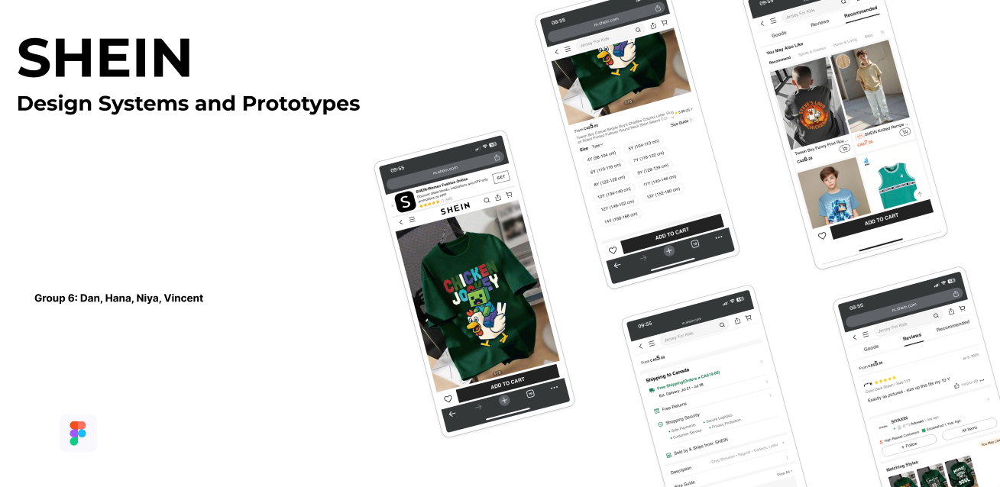

Design System & Prototyping
SHEIN Design Systems & Prototypes
This project combined research, creative tasks, and insights from earlier phases to develop a design system and medium-fidelity prototypes. The goal was to create a more consistent and reusable interface approach while showing how design decisions connect across a larger system.

Overview
This project focused on bringing together earlier research and creative work into a structured design system supported by medium-fidelity prototype screens.
My Role
I combined prior insights and tasks to build a more consistent system of components, patterns, and prototype directions.
Problem
Large digital experiences need consistency. Without a clear system, interfaces can feel disconnected, repetitive, or harder to scale.
Process
- Reviewed earlier research and findings from previous phases
- Combined creative exploration with system thinking
- Developed reusable interface patterns and components
- Applied the system through medium-fidelity prototype screens
Solution
I created a design system approach that helped organize visual and interaction decisions into a more reusable and consistent structure.
Outcome
This project improved my ability to think beyond individual screens and approach design in a more scalable, organized, and system-based way.